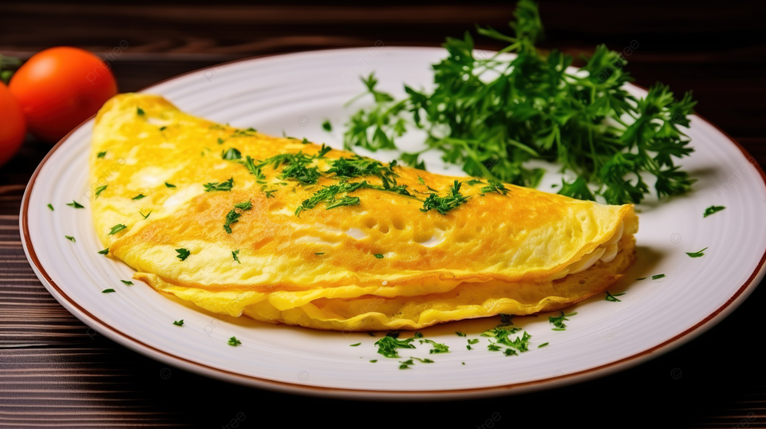

Description
An Egg Omelette is a quick and delicious dish made by whisking eggs
and cooking them with vegetables, spices, and herbs. It's light, fluffy,
and can be enjoyed for breakfast, lunch, or even dinner.
Served hot with bread, toast, or chapati, it's a healthy and protein-rich meal.
Ingredients
- 2 eggs
- 1 small onion, finely chopped
- 1 small tomato, finely chopped
- 1 green chili, finely chopped (optional)
- 2 tbsp milk (for fluffiness, optional)
- Salt to taste
- Black pepper to taste
- 2 tbsp oil or butter
- Fresh coriander leaves, finely chopped (for garnish)
STEPS
Steps
- Crack 2-3 eggs into a bowl.
- Add salt, pepper, and spices of your choice.
- Whisk the eggs well until fluffy.
- Chop onions, tomatoes, chilies, and coriander leaves finely.
- Heat 1-2 tsp oil or butter in a pan.
- Add the chopped vegetables and sauté for 1-2 minutes.
- Pour the whisked eggs into the pan and spread evenly.
- Cook on low flame until the edges set.
- Flip gently (optional) or fold in half.
- Serve hot with bread, toast, or chapati.